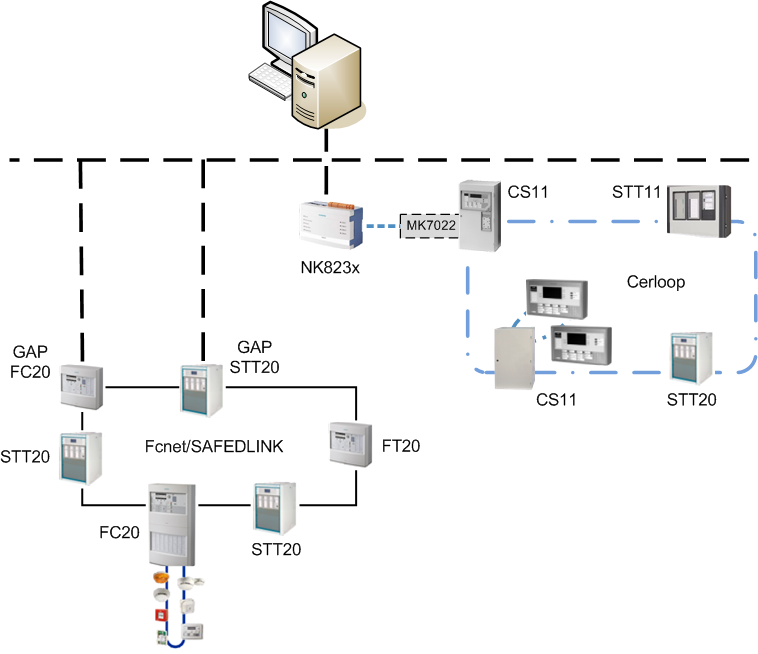

STT Cerloop Architecture
STT20 and STT11: Cerloop Architecture
Both STT20 and STT11 can also connect to Desigo CC over a Cerloop Network via MK7022/NK823x.

STT20 on Cerloop - System Limits and Compatibility
System limits:
- 40 fire panels per Cerloop, including all types.
Compatibility information:
- STT20 panel version: 2.xx.
STT11 on Cerloop - System Limits and Compatibility
System limits:
- 40 fire panels per Cerloop, including all types.